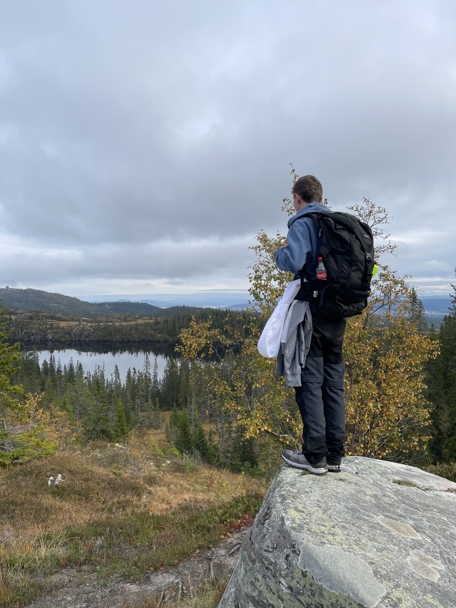
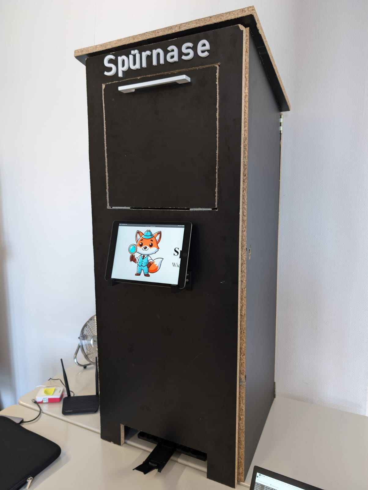

Angehender Abiturient mit Fokus auf IT & Elektrotechnik — von IoT-Prototypen und Microcontrollern bis zu internationalen Wettbewerben.
Kontakt aufnehmen
Ich bin Julian — ein technisch denkender Macher, der Konzepte nicht nur entwirft, sondern sie eigenständig umsetzt und zum Laufen bringt. Ob IoT-Prototyp, Datenbankarchitektur oder 3D-gedrucktes Gehäuse: Ich bringe Ideen vom Whiteboard in die physische Welt.
Meine Stärke liegt in der Verbindung von Hardware und Software — Sensorik mit Raspberry Pi aufbauen, ein Web-Frontend dazu programmieren und das Ganze sauber in eine Datenbank abbilden. Hands-on, von Anfang bis Ende.
Durch Erasmus+-Projekte in Norwegen, Polen und Spanien habe ich gelernt, in internationalen Teams technische Herausforderungen auf Englisch zu lösen.
Ab Herbst 2026 suche ich einen Einstieg ins Duale Studium — Industrielle Elektrotechnik. Ich möchte mein praktisches Verständnis für Elektronik und eingebettete Systeme mit fundierter Ingenieurstheorie verbinden und echte Produkte mitgestalten, die funktionieren.
Programmierung
Daten & Architektur
Hardware & IoT
Prototyping
Sprachen
Soft Skills
OSZ IMT Hackathon
Konzeption und Entwicklung eines voll funktionsfähigen IoT-Prototyps für eine smarte, automatisierte Fundbox. Eigenständige Integration von Füllstandsmessung, Diebstahlschutz, Kamerasteuerung und automatisiertem QR-Code-Druck. Web-Frontend im Kiosk-Modus sowie Backend-Datenbankanbindung zur lückenlosen digitalen Erfassung.

Make-IT Workshop · OSZ IMT
Vertiefung in Hardware, GPIO-Pins, Node-RED als Open-Source-IoT-Plattform, TCP/IP-Kommunikation sowie praktische Umsetzung eigener Programme auf dem Raspberry Pi.
Erasmus+ · Norwegen 🇳🇴
Erasmus+-Aufenthalt an der Heimdal videregående skole. Durchführung eines englischsprachigen gemeinsamen IT-Projekts mit norwegischen Mitschülerinnen und Mitschülern.
Bundeswettbewerb Informatik
Erfolgreiche Teilnahme am renommierten bundesweiten Informatikwettbewerb unter Schirmherrschaft des Bundespräsidenten. Vertiefung algorithmischer Problemlösekompetenz auf nationalem Niveau.
Erasmus+ · Polen 🇵🇱
Erasmus+ Individual Mobility Project bei Semper Avanti in Wrocław. Sprachliche und interkulturelle Weiterbildung in einem internationalen Umfeld.
Erasmus+ · Spanien 🇪🇸
Fachspezifische Berufsorientierung am AIP Language Institute Valencia mit Fokus Robotics und technisches Problemlösen. Spanisch-Abschluss auf Nivel 3 / A2+ mit 100 % Anwesenheit.
Bundeswettbewerb Informatik
Erneute Teilnahme mit messbarer Leistungssteigerung: Volle Punktzahl in der 1. Runde — klarer Beleg für kontinuierlich wachsende analytische Kompetenz.
01
Konzeption und Umsetzung einer responsiven Portfolio-Website in reinem HTML, CSS und JavaScript — mit Scroll-Animationen via Intersection Observer, ganz ohne Framework.
02
Aufbau eines netzwerkweiten Werbeblockers auf Raspberry-Pi-Basis — inklusive DNS-Konfiguration, Webinterface-Verwaltung und Feintuning der Filterlisten.
03
Eigenständige Konstruktion und Fertigung von Hardware-Gehäusen via CAD und FDM-3D-Druck — vom Entwurf bis zum fertigen Bauteil, u. a. für den Hackathon-Prototyp.
04
Beschreibung des Projekts hier einfügen.
05
Beschreibung des Projekts hier einfügen.
06
Beschreibung des Projekts hier einfügen.
Anfragen zu Dualen Studiengängen, spannenden Projekten oder einfach ein Gespräch über Technik und IoT — ich freue mich darüber.